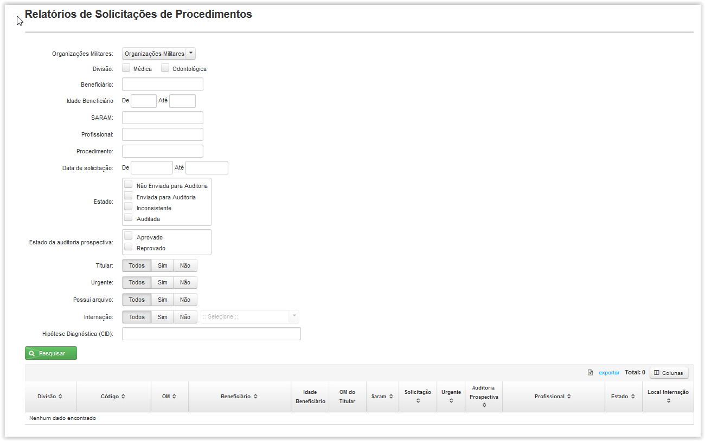

A tela é apresentada com vários filtros (não necessariamente deverão estar preenchidos ou selecionados) para pesquisa de solicitações de procedimento.
Ao clicar no botão( ) é gerada uma tabela para visualização. Você poderá escolher quais campos apareceram na tabela clicando em(
) é gerada uma tabela para visualização. Você poderá escolher quais campos apareceram na tabela clicando em( ).
).
Temos os seguintes filtros para pesquisa:
Organizações Militares: Escolha se quer incluir OM subordinadas.(Perfil de Diretor)
Divisão: Clique na opção desejada para o Tipo de Divisão.
Beneficiário: Digite o nome do beneficiário.
Idade Beneficiário: Escolha a faixa de idade.
SARAM: Digite o SARAM do beneficiário.
Profissional: Digite o nome do profissional.
Procedimento: Digite o código do procedimento ou sua descrição.
Data de solicitação: Escolha o período em que o procedimento foi solicitado.
Estado: Escolha o estado da solicitação de procedimento (Não Enviada para Auditoria, Enviada para Auditoria, Inconsistente ou Auditada).
Estado da auditoria prospectiva: Escolha o estado da auditoria prospectiva(Aprovado ou Reprovado).
Titular: Escolha somente a visualização de solicitações geradas dos titulares.
Urgente: Escolha somente a visualização de solicitações urgentes.
Possui arquivo: Escolha se a solicitação possui arquivo anexo.
Internação: Escolha o tipo de internação (Em Enfermaria, Em Apartamento, UTI ou Domiciliar).
Hipótese diagnóstica (CID): Escolha a hipótese diagnóstica (CID).

Para adicionar ou remover as colunas exibidas nos resultados clique em( ) e marque ou desmarque as caixas com o nome da coluna.
) e marque ou desmarque as caixas com o nome da coluna.